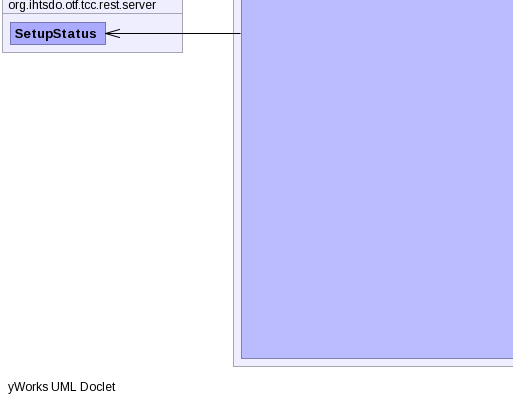

- java.lang.Object
-
- javax.servlet.GenericServlet
-
- javax.servlet.http.HttpServlet
-
- org.glassfish.jersey.servlet.ServletContainer
-
- org.ihtsdo.otf.tcc.rest.server.ChronicleServletContainer
-
- All Implemented Interfaces:
- Serializable, javax.servlet.Filter, javax.servlet.Servlet, javax.servlet.ServletConfig, org.glassfish.jersey.server.spi.Container
public class ChronicleServletContainer extends org.glassfish.jersey.servlet.ServletContainerOverriding ServletContainer to enable access toinit()anddestroy()methods.- Author:
- kec
- See Also:
- Serialized Form
-


-
-
Field Summary
Fields Modifier and Type Field and Description static IntegermaxHeaderSizestatic SetupStatusstatus
-
Constructor Summary
Constructors Constructor and Description ChronicleServletContainer()
-
Method Summary
Methods Modifier and Type Method and Description voiddestroy()static longgetFolderSize(File... selectedDirectories)javax.servlet.ServletContextgetServletContext()voidinit()static List<File>listFiles(String directoryName)voidoutputFileSizes()protected voidservice(javax.servlet.http.HttpServletRequest request, javax.servlet.http.HttpServletResponse response)org.glassfish.jersey.internal.util.collection.Value<Integer>service(URI baseUri, URI requestUri, javax.servlet.http.HttpServletRequest request, javax.servlet.http.HttpServletResponse response)-
Methods inherited from class org.glassfish.jersey.servlet.ServletContainer
doFilter, doFilter, getConfiguration, getStaticContentPattern, init, init, reload, reload, service
-
Methods inherited from class javax.servlet.http.HttpServlet
doDelete, doGet, doHead, doOptions, doPost, doPut, doTrace, getLastModified
-
-
-
-
Field Detail
-
status
public static SetupStatus status
-
maxHeaderSize
public static Integer maxHeaderSize
-
-
Method Detail
-
getServletContext
public javax.servlet.ServletContext getServletContext()
- Specified by:
getServletContextin interfacejavax.servlet.ServletConfig- Overrides:
getServletContextin classorg.glassfish.jersey.servlet.ServletContainer
-
destroy
public void destroy()
- Specified by:
destroyin interfacejavax.servlet.Filter- Specified by:
destroyin interfacejavax.servlet.Servlet- Overrides:
destroyin classorg.glassfish.jersey.servlet.ServletContainer
-
init
public void init() throws javax.servlet.ServletException- Overrides:
initin classorg.glassfish.jersey.servlet.ServletContainer- Throws:
javax.servlet.ServletException
-
service
protected void service(javax.servlet.http.HttpServletRequest request, javax.servlet.http.HttpServletResponse response) throws javax.servlet.ServletException, IOException- Overrides:
servicein classorg.glassfish.jersey.servlet.ServletContainer- Throws:
javax.servlet.ServletExceptionIOException
-
service
public org.glassfish.jersey.internal.util.collection.Value<Integer> service(URI baseUri, URI requestUri, javax.servlet.http.HttpServletRequest request, javax.servlet.http.HttpServletResponse response) throws javax.servlet.ServletException, IOException
- Overrides:
servicein classorg.glassfish.jersey.servlet.ServletContainer- Throws:
javax.servlet.ServletExceptionIOException
-
outputFileSizes
public void outputFileSizes()
-
getFolderSize
public static long getFolderSize(File... selectedDirectories)
-
-